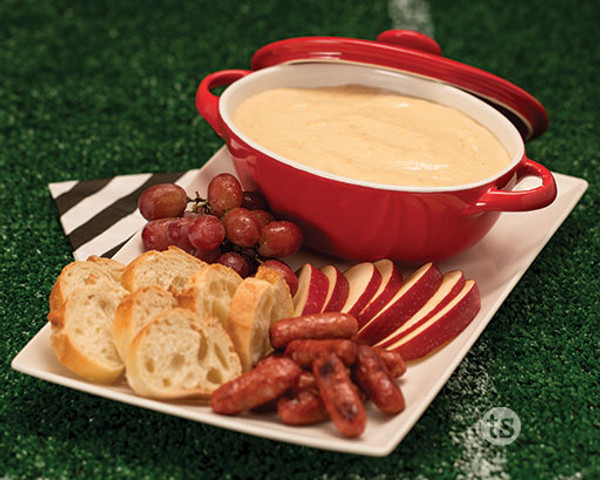

Gouda and Beer Fondue

Description:
It's real goud...........a! Honestly, I don't really like this one, but my dad does lol.
Ingredients:
- 1 teaspoon Dijon mustard
- Kosher salt
- 8 ounces Gouda cheese, shredded
- 8 ounces Swiss Emmentaler cheese, shredded
- 2 tablespoons cornstarch
- One 12-ounce bottle lager beer
- 2 tablespoons fresh lemon juice
Steps:
- To make the fondue, combine the Gouda and Emmentaler cheeses with the cornstarch in a medium bowl. Toss with your fingers until the cheese strands are coated.
- Combine the beer and 1 tablespoon of the lemon juice in a medium non-reactive saucepan over medium heat until it is steaming but not simmering, 2 to 3 minutes. Add the cheese in large handfuls, stirring with a wooden spoon. Continue cooking and stirring until all the cheese is melted, about 5 minutes. Once smooth, stir in the mustard and the remaining 1 tablespoon lemon juice. Season with salt.